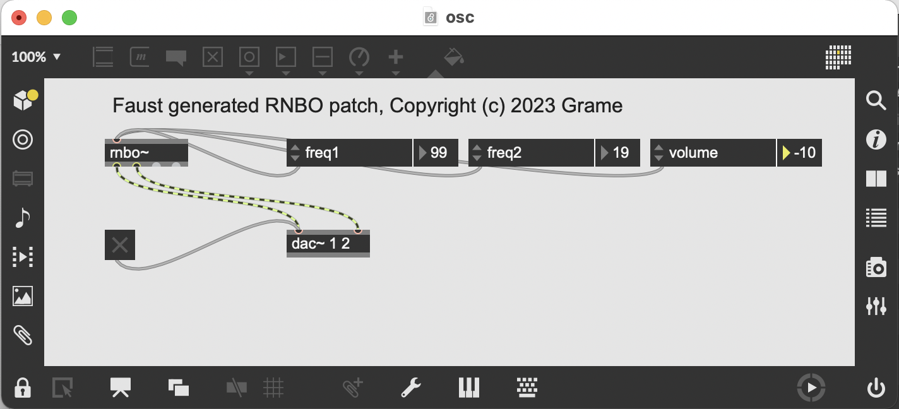
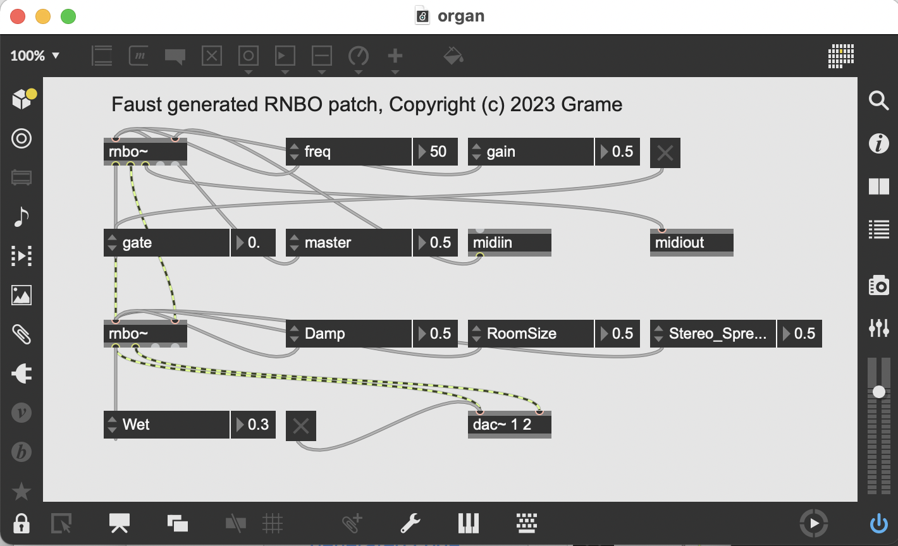

Using Faust in RNBO with codebox~
In this tutorial, we present how Faust can be used with RNBO, a library and toolchain that can take Max-like patches, export them as portable code, and directly compile that code to targets like a VST, a Max External, or a Raspberry Pi. DSP programs can be compiled to the internal codebox~ sample level scripting language. Compiling Faust DSP to codebox~ code will allow to take profit of hundreds of DSP building blocks implemented in the Faust Libraries, ready to use Examples, any DSP program developed in more than 200 projects listed in the Powered By Faust page, or Faust DSP programs found on the net.
Who is this tutorial for?
The first section assumes a working Faust compiler installed on the machine, so is more designed for regular Faust users. The second section is better suited for RNBO users who want to discover Faust [TODO].
Using command line tools
Generating codebox~ code
Assuming you've installed the faust compiler, starting from the following DSP osc.dsp program:
import("stdfaust.lib");
vol = hslider("volume [unit:dB]", 0, -96, 0, 0.1) : ba.db2linear : si.smoo;
freq1 = hslider("freq1 [unit:Hz]", 1000, 20, 3000, 1);
freq2 = hslider("freq2 [unit:Hz]", 200, 20, 3000, 1);
process = vgroup("Oscillator", os.osc(freq1) * vol, os.osc(freq2) * vol);
The codebox~ code can be generated using the following line (note the use of -double option, the default sample format in RNBO/codebox~):
faust -lang codebox -double osc.dsp -o osc.codebox
This will generate a series of functions to init, update parameters and compute audio frames.
Looking at the generated code
The generated code contains a sequence of parameters definitions with their min, max, step and default values:
// Params
@param({min: 2e+01, max: 3e+03, step: 0.1}) freq1 = 1e+03;
@param({min: 2e+01, max: 3e+03, step: 0.1}) freq2 = 2e+02;
@param({min: -96.0, max: 0.0, step: 0.1}) volume = 0.0;
Next the declaration of the DSP structure using the @state decorator, creating a state that persists across the lifetime of the codebox object. Scalar and arrays with the proper type are created:
// Fields
@state fSampleRate_cb : Int = 0;
@state fConst1_cb : number = 0;
@state fHslider0_cb : number = 0;
@state fConst2_cb : number = 0;
@state iVec0_cb = new FixedIntArray(2);
@state fRec0_cb = new FixedDoubleArray(2);
@state fConst3_cb : number = 0;
@state fHslider1_cb : number = 0;
@state fRec2_cb = new FixedDoubleArray(2);
@state fHslider2_cb : number = 0;
@state fRec3_cb = new FixedDoubleArray(2);
@state iVec1_cb = new FixedIntArray(2);
@state iRec1_cb = new FixedIntArray(2);
@state ftbl0mydspSIG0_cb = new FixedDoubleArray(65536);
@state fUpdated : Int = 0;
@state fControl_cb = new FixedDoubleArray(3);
Next the DSP init code, which is added in dspsetup, only available in codebox~ where it will be called each time audio is turned on in Max (which is basically every time the audio state is toggled, or the sample rate or vector size is changed). Here the DSP state is initialized using the RNBO current sample rate:
// Init
function dspsetup() {
fUpdated = true;
for (let l2_re0_cb : Int = 0; (l2_re0_cb < 2); l2_re0_cb = (l2_re0_cb + 1)) {
iVec1_cb[l2_re0_cb] = 0;
}
for (let l3_re0_cb : Int = 0; (l3_re0_cb < 2); l3_re0_cb = (l3_re0_cb + 1)) {
iRec1_cb[l3_re0_cb] = 0;
}
for (let i1_re0_cb : Int = 0; (i1_re0_cb < 65536); i1_re0_cb = (i1_re0_cb + 1)) {
iVec1_cb[0] = 1;
iRec1_cb[0] = ((iVec1_cb[1] + iRec1_cb[1]) % 65536);
ftbl0mydspSIG0_cb[i1_re0_cb] = sin((9.587379924285257e-05 * iRec1_cb[0]));
iVec1_cb[1] = iVec1_cb[0];
iRec1_cb[1] = iRec1_cb[0];
}
fHslider0_cb = 0.0;
fHslider1_cb = 1e+03;
fHslider2_cb = 2e+02;
...
...
fSampleRate_cb = samplerate();
let fConst0_cb : number = min(1.92e+05, max(1.0, fSampleRate_cb));
fConst1_cb = (44.1 / fConst0_cb);
fConst2_cb = (1.0 - fConst1_cb);
fConst3_cb = (1.0 / fConst0_cb);
}
Parameters handling is separated in two functions: control is called each time a parameter has changed:
// Control
function control() {
fControl_cb[0] = (fConst1_cb * pow(1e+01, (0.05 * fHslider0_cb)));
fControl_cb[1] = (fConst3_cb * fHslider1_cb);
fControl_cb[2] = (fConst3_cb * fHslider2_cb);
}
And the actual change is triggered when at least one parameter has changed, controlled by the state of fUpdatedglobal variable:
// Update parameters
function update(freq1,freq2,volume) {
fUpdated = int(fUpdated) | (freq1 != fHslider1_cb); fHslider1_cb = freq1;
fUpdated = int(fUpdated) | (freq2 != fHslider2_cb); fHslider2_cb = freq2;
fUpdated = int(fUpdated) | (volume != fHslider0_cb); fHslider0_cb = volume;
if (fUpdated) { fUpdated = false; control(); }
}
Finally compute process the audio inputs and produces audio ouputs:
// Update parameters
/ Compute one frame
function compute() {
iVec0_cb[0] = 1;
fRec0_cb[0] = (fControl_cb[0] + (fConst2_cb * fRec0_cb[1]));
let iTemp0_cb : Int = (1 - iVec0_cb[1]);
let fTemp1_cb : number = ((iTemp0_cb) ? 0.0 : (fControl_cb[1] + fRec2_cb[1]));
fRec2_cb[0] = (fTemp1_cb - floor(fTemp1_cb));
output0_cb = (fRec0_cb[0] * ftbl0mydspSIG0_cb[max(0, min(int((65536.0 * fRec2_cb[0])), 65535))]);
let fTemp2_cb : number = ((iTemp0_cb) ? 0.0 : (fControl_cb[2] + fRec3_cb[1]));
fRec3_cb[0] = (fTemp2_cb - floor(fTemp2_cb));
output1_cb = (fRec0_cb[0] * ftbl0mydspSIG0_cb[max(0, min(int((65536.0 * fRec3_cb[0])), 65535))]);
iVec0_cb[1] = iVec0_cb[0];
fRec0_cb[1] = fRec0_cb[0];
fRec2_cb[1] = fRec2_cb[0];
fRec3_cb[1] = fRec3_cb[0];
return [output0_cb,output1_cb];
}
With this code in place, the following sequence of operations is done at each sample:
// Update parameters
update(freq1,freq2,volume);
// Compute one frame
outputs = compute();
// Write the outputs
out1 = outputs[0];
out2 = outputs[1];
Note that the generated code uses the so-called scalar code generation model, the default one, where the compiled sample generation code is done in compute.
Testing the generated codebox~ code
To be tested, the generated code has to be pasted in a codebox~ component in an encompassing RNBO patch, with additional patching to add the needed audio inputs/outputs and control parameters. Thus a more integrated and simpler model is to use the faust2rnbo tool.
Using the faust2rnbo tool
The faust2rnbo tool transforms a Faust DSP program into a RNBO patch containing a rnbo~ object and including the codebox code (generated using the codebox backend) as a subpatch. Needed audio inputs/outputs and parameters (with the proper name, default, min and max values) are automatically added in the patch. Additional options allow to generate a special version of the RNBO patch used in the testing infrastructure. The code is written in Python and uses the very powerful py2max library to generate the maxpat JSON format.
faust2rnbo -h
Usage: faust2rnbo [options] [Faust options] <file.dsp>
Compiles Faust programs to RNBO patches
Options:
-midi : activates MIDI control
-nvoices <num> : produces a polyphonic DSP with <num> voices, ready to be used with MIDI events
-effect <effect.dsp> : generates a polyphonic DSP connected to a global output effect, ready to be used with MIDI or OSC
-effect auto : generates a polyphonic DSP connected to a global output effect defined as 'effect' in <file.dsp>, ready to be used with MIDI or OSC
-compile : to trigger C++ compilation at load time
-test : to generate special 'RB_XX' prefix for parameters (for testing)
-cpp_path <path> : to set C++ export folder
-cpp_filename <filename> : to set C++ export filename
Faust options : any option (e.g. -vec -vs 8...). See the Faust compiler documentation.
The resulting patch contains:
- an audio
adc~input automatically connected to thernbo~object (when the DSP has audio inputs) - an audio
dac~output automatically connected with thernbo~object.
So the following command:
faust2rnbo osc.dsp
will directly compile the osc.dsp file and generate the osc.maxpat file, that can be opened in Max/MSP, with the following user-interface:

and with the rnbo~ subpatcher containing the codebox object as well as the parameter control machinery:

MIDI control
Control of parameters with MIDI can be activated using the -midi option, or using the declare options "[midi:on]"; syntax in the DSP code. The patch will then contain midiin/midiout objects at global level and specialized ctlin/notein etc. objects in the codebox subpatch with the appropriate scale object to map the MIDI message range on the target parameter range.
So for instance the MIDI augmented example:
import("stdfaust.lib");
declare options "[midi:on]";
vol = hslider("volume [unit:dB] [midi: ctrl 7]", 0, -96, 0, 0.1) : ba.db2linear : si.smoo;
freq1 = hslider("freq1 [unit:Hz][midi: ctrl 1]", 1000, 20, 3000, 0.1);
freq2 = hslider("freq2 [unit:Hz][midi: ctrl 2]", 200, 20, 3000, 0.1);
process = vgroup("Oscillator", os.osc(freq1) * vol, os.osc(freq2) * vol);
can now be controlled with MIDI volume (ctrl 7), ctrl 1 and ctrl 2 for each channel frequency. Note that the midiin/midiout objects still have to be manually connected to the rnbo~ object since audio outlets only appear after the JIT compilation step.
So the following command:
faust2rnbo -midi osc.dsp
will compile a osc.maxpat file containing additional midiin/midiout objects, with the following user-interface:

Polyphonic instruments
When the DSP follows the polyphonic ready instrument convention, it can be activated in MIDI controllable polyphonic mode. So the following DSP program:
import("stdfaust.lib");
process = vgroup("Organ", voice(freq) * gain * en.adsr(0.1, 0.1, 0.8, 0.3, button("gate"))) * master <: (_,_)
with {
master = hslider("master [midi:ctrl 7]", 0.5, 0, 1, 0.01);
gain = hslider("gain", 0.5, 0, 1, 0.01);
freq = hslider("freq", 500, 200, 3000, 0.1);
voice(freq) = os.osc(freq) + os.osc(freq*2)*0.5 + os.osc(freq*3)*0.25;
};
compiled with the command:
faust2rnbo -midi -nvoices 12 organ.dsp
will create a patch containing a rnbo~ object with 12 voices, and with a notein object added in the subpatch correctly connected to the appropriate freq/gain/gate aware parameters. Additional mapping depending of the convention used to describe the pitch (freq or key) or gain (gain or velocity)) will be added when needed, with the generated user-interface:

In the DSP, note that the master slider can be controlled using the crl 7 (= Volume) MIDI message.
Polyphonic instruments with an effect
The following polyphonic ready instrument DSP, with an integrated effect, can be converted to a polyphonic MIDI ready patch:
import("stdfaust.lib");
process = vgroup("Organ", voice(freq) * gain * en.adsr(0.1, 0.1, 0.8, 0.3, button("gate"))) * master <: (_,_)
with {
master = hslider("master [midi:ctrl 7]", 0.5, 0, 1, 0.01);
gain = hslider("gain", 0.5, 0, 1, 0.01);
freq = hslider("freq", 500, 200, 3000, 0.1);
voice(freq) = os.osc(freq) + os.osc(freq*2)*0.5 + os.osc(freq*3)*0.25;
};
effect = dm.freeverb_demo;
To be compiled with the following:
faust2rnbo -midi -nvoices 16 -effect auto organ-effect.dsp
with the generated user-interface, containting the polyphonic DSP rnbo~ object connected to the global effect rnbo~ object:

Known issues
This is a [Work In Progress] and the generated code does not always work as expected:
- some DSP programs are producing incorrect audio samples due to several subtle semantic issues caused by bugs in the RBNO C++ exported code.